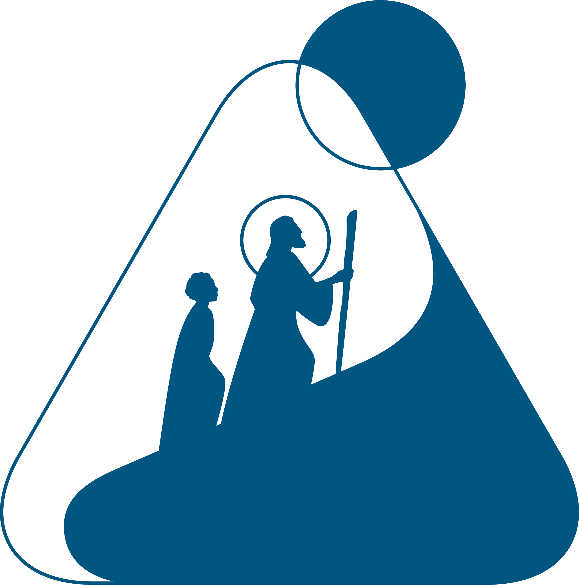

Un pomeriggio in compagniaFoto e video · 24 ottobre
Una partita tira l'altra. E queste ce le teniamo.
Caricamenti aperti fino al 31 ottobre

GUGD Italia Palo delle CollineLe novità e i ricordi delle nostre attività.
Le foto iniziano da voi. Il post dell'album arriverà più avanti.
Una partita tira l'altra. E queste ce le teniamo.
Sabato 7 novembre, al Centro delle Colline. Trovi programma e informazioni nell'attività.
Prototipo locale: ogni azione modifica soltanto questa anteprima.